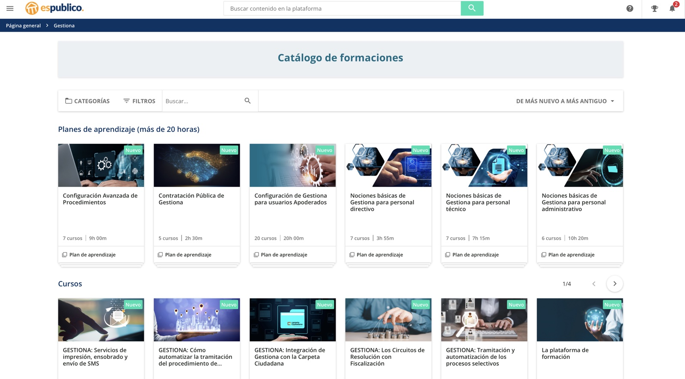
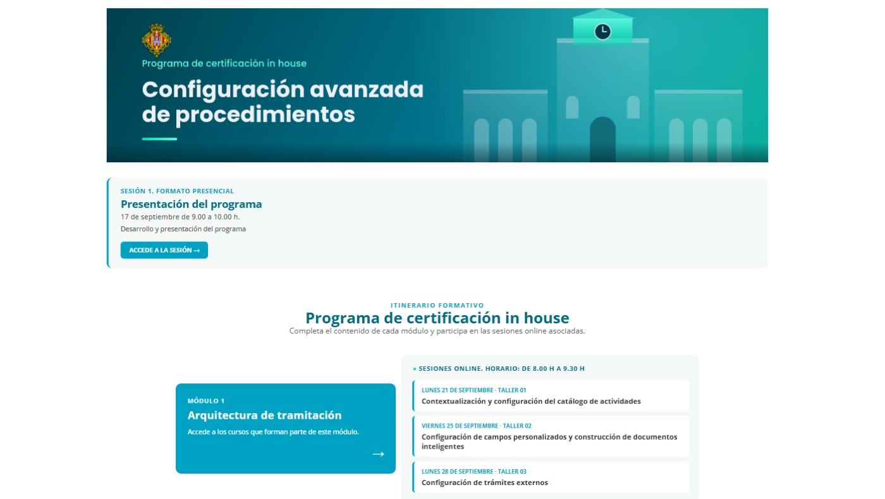
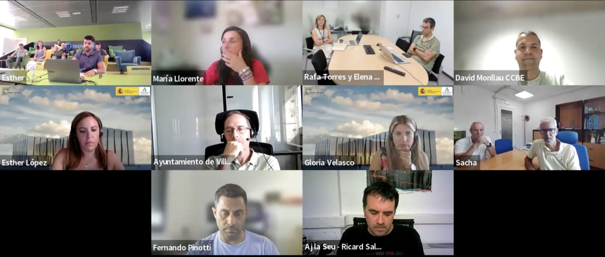
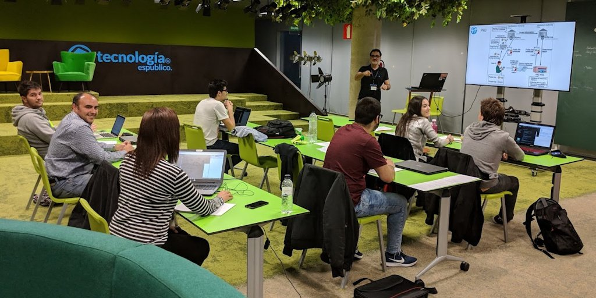
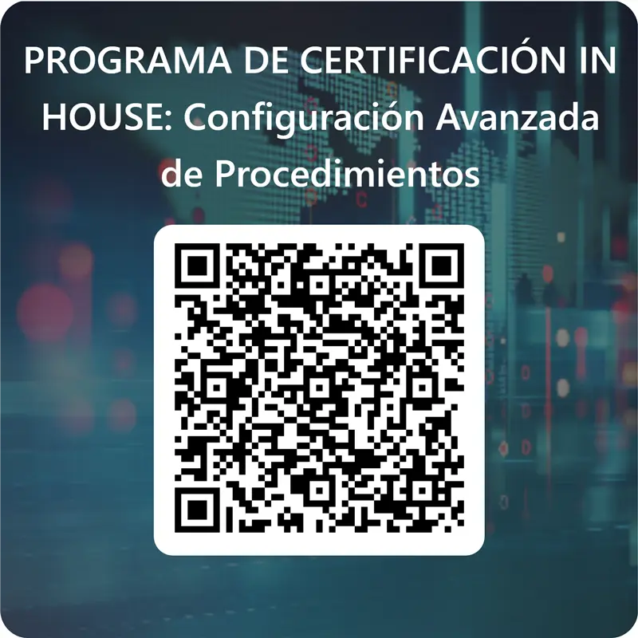

Programa de certificación in-house
Configuración avanzada de procedimientos
Sesión 01 · Kick-off
17 de septiembre de 2026
Las fases del aprendizaje de Maslow
1
Inconscientemente incompetente
No configuro procedimientos. Ese es un tema de informática. Utilizo Gestiona igual desde hace más de 5 años.
2
Conscientemente incompetente
Descubro lo que la herramienta puede hacer y lo que aún no domino.
3
Conscientemente competente
Aplico lo aprendido con método: configuro y parametrizo con criterio y control.
4
Inconscientemente competente
Lo domino en mi día a día… hasta que una novedad de Gestiona abre otro ciclo.
Contexto tecnológico de las AA PP
Contrato 1
2012 – 2016
Digitalización
Interoperabilidad y seguridad
Contrato 2
2017 – 2022
Transformación digital
Normalización y simplificación
Contrato actual
2023 – 2028
Automatización
Análisis de datos, inteligencia artificial…
¿Por qué este programa de certificación?
“Queremos que aprovechéis al máximo todo el potencial de Gestiona”
Objetivos del programa
- Capacitar en la configuración y parametrización de procedimientos.
- Transferir el diseño y la definición de procedimientos a las áreas gestoras.
- Impulsar la simplificación administrativa y la normalización de trámites y servicios.
- Acompañar en el despliegue y puesta en producción de procedimientos reglados.
- Crear espacios de aprendizaje y mejora continua internos.
Metodología de aprendizaje
Academy, talleres online y sesiones presenciales
Metodología de aprendizaje
Paso 1
Revisión autónoma de contenido teórico
A tu ritmo, en la plataforma Academy.
Paso 2
Asistencia y participación en talleres online
Sesiones en directo sobre cada módulo.
Paso 3
Preparación y seguimiento de sesiones presenciales
Formación práctica con docentes especialistas.
Plataforma de e-learning


Talleres online

8 talleres
Sesiones en directo vinculadas a los 4 módulos
21/09 – 13/11
Lunes y viernes
10:00 – 11:00 h
Una hora por taller
Asistencia obligatoria
Participación activa en cada sesión
Sesiones presenciales

2 sesiones · 4 jornadas
Formación práctica con docentes especialistas
20-21/10 y 17-18/11
Martes y miércoles
8:00 – 14:30 h
Jornada completa de mañana
Asistencia obligatoria
Requisito para la certificación
Funcionamiento del programa
Navegación libre, aunque recomendamos seguir el orden establecido.
Actividades prácticas en el entorno demo y test de cada módulo.
Sesiones presenciales
ObligatoriasAsistencia a los talleres online
ObligatoriaPuesta en producción de un procedimiento por alumno.
Evaluación final
Proyecto final
Configuración de un procedimiento real
Instrucción del procedimiento reglada
Resolución del procedimiento automatizada
Elementos evaluables en el proyecto final
Trámite externo
Tesauros, diferentes tipologías
Párrafos condicionados / campos calculados
Tramitación reglada, uso de diferentes tipos de tareas
Secuencia de tareas regladas
Cambios de estado
Circuitos de resolución
Cierre del expediente
Claves para preparar el proyecto final
Paso 1
Identificar el procedimiento a trabajar
- Recurrente y homogeneizable.
- Que contenga los elementos mínimos a evaluar.
Paso 2
Consultoría
- Acopio de varios expedientes con resultados distintos.
- Identificar personas / grupos.
- Pintar un flujo.
- Revisar la normativa: simplificar lo superfluo.
Paso 3
Biblioteca de datos y plantillas
- Datos: nombre, origen y tipología.
- Plantillas de cada fase.
Programa académico
Calendario, plan de aprendizaje y talleres
Calendario sesiones presenciales
17/09
Jueves
Inicio del programa
Kick-off
20 – 21/10
Martes y miércoles
1.ª sesión presencial
17 – 18/11
Martes y miércoles
2.ª sesión presencial
18/11
Miércoles
Fin del programa
18/12/2026
Viernes
Fecha fin evaluación final
Calendario
Plan de aprendizaje
Módulo 1
Arquitectura de tramitación
- Catálogo de actividades de Gestiona
- Catálogo de procedimientos
- Activos semánticos del procedimiento
- Construcción de documentos inteligentes
- Definición y configuración de trámites externos
Módulo 2
Escritorio de tramitación
- Circuitos de tramitación y libros oficiales
- Circuitos de resolución
Módulo 3
Tramitación reglada
- Tramitación reglada de procedimientos
- Circuitos de resolución avanzados
- Simplificación administrativa
- Tareas genéricas y subprocesos
- Configuración de campos calculados
Módulo 4
Analítica de datos
- Búsquedas avanzadas
- Conceptos del business intelligence
Calendario de talleres online
Módulo 1Arquitectura de tramitación
Lun 21/09T01
Contextualización y configuración del catálogo de actividades
Vie 25/09T02
Configuración de campos personalizados y construcción de documentos inteligentes
Lun 28/09T03
Configuración de trámites externos
Módulo 2Escritorio de tramitación
Vie 02/10T04
Configuración de circuitos de resolución
Módulo 3Tramitación reglada
Lun 05/10T05
Configuración de campos calculados
Lun 26/10T06
Configuración de circuitos de resolución avanzados
Lun 09/11T07
Configuración de un workflow en Gestiona
Módulo 4Analítica de datos
Vie 13/11T08
Búsquedas avanzadas y dashboards personalizados
De 10:00 h a 11:00 h
Calendario de talleres presenciales
1.ª sesión presencial
Martes
20/10/2026
- Metodología de análisis de un procedimiento
- Configuración básica de trámites externos y tesauros
- Gestiona Code
- Construcción de documentos inteligentes
Miércoles
21/10/2026
- Conceptualización de la resolución del procedimiento en Gestiona
- Circuitos de resolución
- Configuración de tramitación reglada
2.ª sesión presencial
Martes
17/11/2026
- Tramitación reglada 360
Miércoles
18/11/2026
- Búsquedas avanzadas y cuadros de mando
- Gestión y mantenimiento de la configuración de procedimientos: tips y buenas prácticas
- Parametrización personalizada
- Resolución de dudas y cierre del curso
De 8:00 h a 14:30 h
Registro de asistencia

Escanea el código para registrar tu asistencia
Programa de certificación in-house · Configuración avanzada de procedimientos
Muchas gracias
Programa de certificación in-house · Ajuntament de Castelló